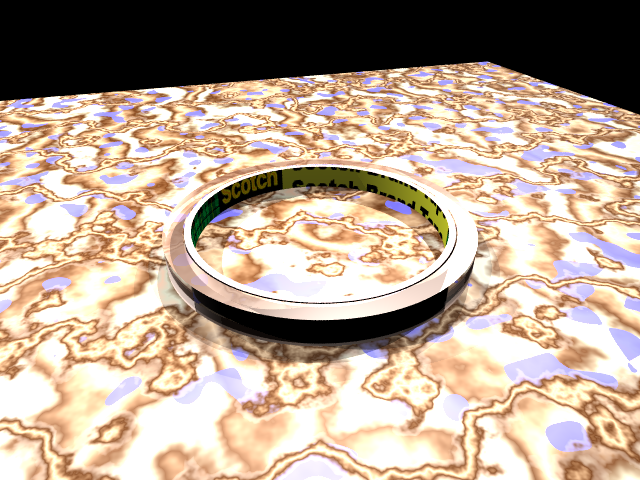

|
|
Assignment 06
-
(30) Complete the "Doing It Yourself: Lighting" section of Chapter 8 in the textbook. Answer each question, and submit with each answer the bmp rendered for the question (you do not need to provide the .pov file). You will need files from the CD in order to complete the questions. Note that the global ambient light setting in question 1, with a value between 0-1, is different from the one we discussed in class.
-
(20) Using two of the .pov files from Assignment 04, question 2, create a new lighting setup for each file starting with basic 3-point lighting as we discussed in class. Use a variety of light types and choose a lighting setup that is appropriate to create the most pleasing image - change camera parameters if you want. Submit both your .pov file and rendered bmp image for each iamge.
-
(50) Choose a small, simple object (something you can hold in your hand) and create that object in POVRay. Do your best to render a realistic object using all the skills you have - CSG, image-mapping, texturing, bump-mapping, etc... Then, create an image that sets multiple copies of that object in a simple scene (on a plane or thin, textured box. Light the scene using the three point lighting setup or some other combination of the lighting we discussed in class. If you need some suggestions for objects, here are some: a variety of marbles, nuts (as in nuts and bolts), coins, jars, books, pencils, candles, anything with simple geometry that can easily be constructed using primitives or CSG operations in POVRay. Remember the scale that you are working in - the object(s) should be small. Submit your .pov file and the rendered image. Here's an example image and the POVRay file used to create it.

back to the Assignment page
|